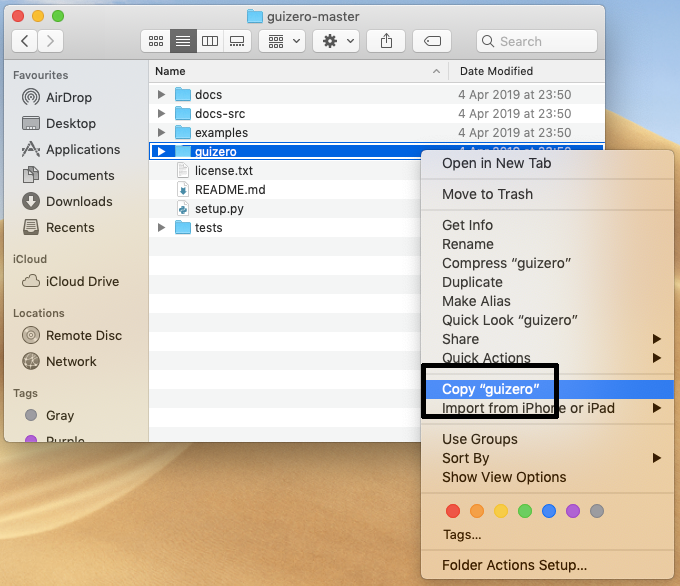
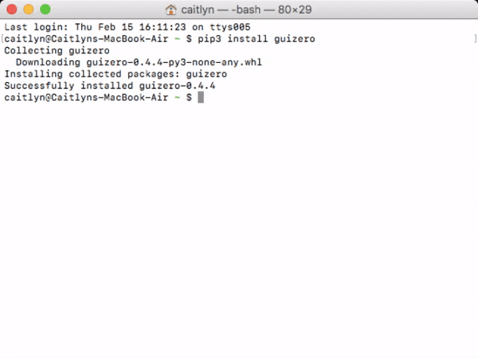
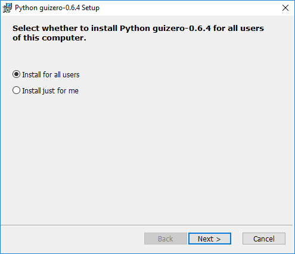
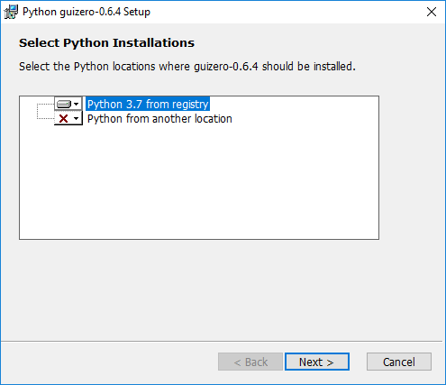
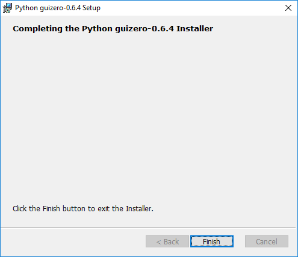

Installation
guizero is designed to allow new learners to quickly and easily create GUIs for their programs.
If you can download and unzip a file, you can install guizero - no special permissions or administrator rights are required.
If you have administrator rights and are connected to the internet, you can use pip to install or upgrade guizero (recommended).
Windows users can also use the Windows MSI installer.
Easy install
-
Go to the guizero repository on GitHub.
-
Click the green "Code" button and then "Download ZIP"

-
Open the zip file
-
Open the
guizero-masterfolder, then copy theguizerofolder and paste it into your home directory-
Windows

-
macOS

-
-
That's it! When you write your guizero code, make sure you save it into your home directory.
Install using pip
You can use the command prompt and pip to install guizero for:
pip can also be used to install additional features and upgrade guizero.
Windows
-
Open a command prompt by clicking Start > Windows System > Command Prompt, or by typing 'command' into the start menu's search bar.

-
Type this command and press enter:
pip3 install guizero

If you experience problems, have a look at this guide to Using pip on Windows.
macOS
-
Open a terminal window by clicking Applications > Utilities > Terminal, or by typing 'terminal' into the desktop's search bar.

-
Type this command and press enter:
pip3 install guizero
Raspberry Pi
-
Open a terminal window by clicking Menu > Accessories > Terminal.

-
Type this command and press enter:
sudo pip3 install guizero
Linux
- Open a terminal
- Install
tkinterusing your distribution's package manager, e.g.sudo apt install python3-tk -
Install guizero using pip by typing
pip3 install guizeroorsudo pip3 install guizeroif you don't have superuser rights
Note: If you are using Debian, you alternatively have the option to install guizero via apt
sudo apt-get install python-guizero
Install additional features
To use the additional image features of guizero such as:
- JPG image support
- scaling images
- animated gifs
... you will need to install guizero with the pip command:
-
Windows / macOS
pip3 install guizero[images] -
Linux / Raspberry Pi
sudo pip3 install guizero[images]
The additional image features are not available to install using the easy install method.
Upgrading guizero
If you installed guizero using pip, you can upgrade guizero using a pip command:
-
Windows / macOS
pip3 install guizero --upgrade -
Linux / Raspberry Pi
sudo pip3 install guizero --upgrade
If you installed guizero using the easy install method, to upgrade you should follow the same easy installation steps to download the latest version of guizero, then delete the old guizero folder and replace it with the newest version.
Windows MSI installer
If you are using Windows you can install guizero by downloading and running a Windows MSI installer application.
-
Download either the 64-bit guizero installer or the 32-bit guizero installer depending on which version of Python you are using.
Note: If you are not sure what version of python you are running, run the following program in Python, which will output either
32or64:import struct print(struct.calcsize("P") * 8) -
Run the guizero installer and select whether guizero should be installed for all users or just for me and click Next.

-
Select which version(s) of Python you want to install guizero for and click Next.

Note: For most people, there will be only one version of Python and you can safely choose the default option.
-
You may be asked "Do you wish to allow this application from an unknown publisher to make changes to your device?" - click Yes.
-
Wait while guizero is installed.

-
Click Finish when the installation is complete.
